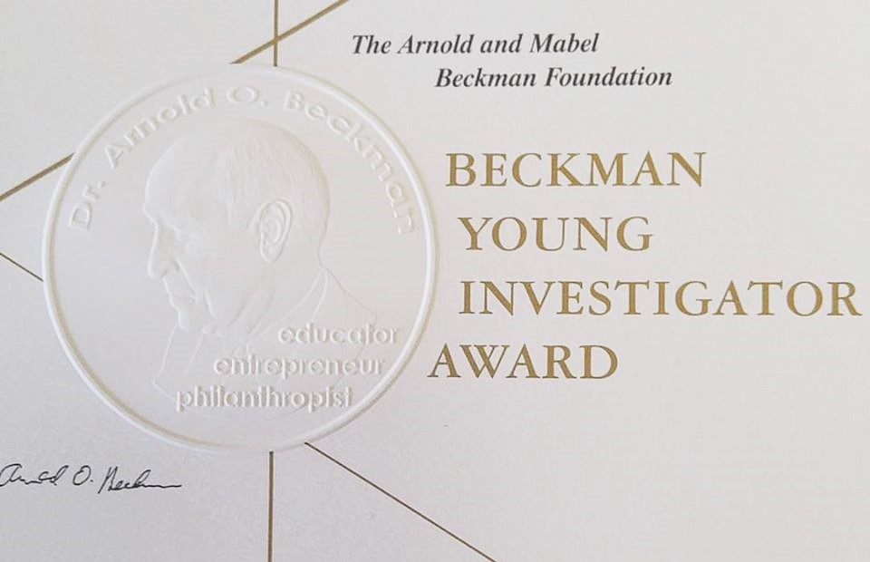

Jing-Ke Weng named a 2016 Beckman Young Investigator
Jing-Ke Weng is selected as one of the eight recipients of the 2016 Beckman Young Investigator Award. The Beckman Young Investigator Program provides research support to the most promising young faculty members in the early stages of their academic careers in the chemical and life sciences, particularly to foster the invention of methods, instruments and materials that will open up new avenues of research in science.
